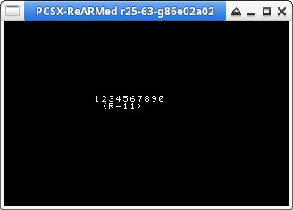

參考資訊：
https://psx.arthus.net/starting.html
https://github.com/ABelliqueux/nolibgs_hello_worlds#installation
main.c
#include <sys/types.h>
#include <stdio.h>
#include <libgte.h>
#include <libetc.h>
#include <libgpu.h>
#include <libcd.h>
#include <malloc.h>
static unsigned char ramAddr[0x40000] = { 0 };
int main(int argc, char *argv[])
{
const int w = 320;
const int h = 240;
DISPENV disp = { 0 };
DRAWENV draw = { 0 };
CdlFILE pos = { 0 };
u_long *buf = 0;
u_char rt[8] = { 0 };
int r = 0;
ResetGraph(0);
SetDefDispEnv(&disp, 0, 0, w, h);
SetDefDrawEnv(&draw, 0, 0, w, h);
SetDispMask(1);
setRGB0(&draw, 0, 0, 0);
draw.isbg = 1;
PutDispEnv(&disp);
PutDrawEnv(&draw);
FntLoad(640, 0);
FntOpen(100, 100, w, h, 0, 255);
CdInit();
InitHeap((u_long *)ramAddr, sizeof(ramAddr));
CdSearchFile(&pos, "\\TEST.TXT;1");
buf = malloc(pos.size);
memset(buf, 0, pos.size);
CdControl(CdlSetloc, (u_char *)&pos.pos, rt);
if (CdRead(pos.size, (u_long *)buf, CdlModeSpeed) > 0) {
r = CdReadSync(1, 0);
}
while (1) {
FntPrint("%s (r=%d)", buf, r);
FntFlush(-1);
DrawSync(0);
VSync(0);
PutDispEnv(&disp);
PutDrawEnv(&draw);
}
return 0;
}
P.S. "\\TEST.TXT;1"代表讀取根目錄下的TEST.TXT檔案(第1版)
system.cnf
BOOT=cdrom:\main.exe;1 TCB=4 EVENT=10 STACK=801FFFF0
cdrom.xml
<?xml version="1.0" encoding="UTF-8"?>
<iso_project image_name="cdrom.bin" cue_sheet="cdrom.cue">
<track type="data">
<identifiers
system="playstation"
application="playstation"
volume="main"
volume_set="main"
publisher="main"
data_preparer="mkpsxiso"
/>
<directory_tree>
<file name="system.cnf" type="data" source="system.cnf"/>
<file name="main.exe" type="data" source="main.exe"/>
<file name="TEST.TXT" type="data" source="test.txt"/>
</directory_tree>
</track>
</iso_project>
P.S. 檔名和副檔名都大寫
編譯、執行
$ make $ echo "1234567890" > test.txt $ mkpsxiso -y cdrom.xml $ /opt/ps1/pcsx -cdfile cdrom.bin
